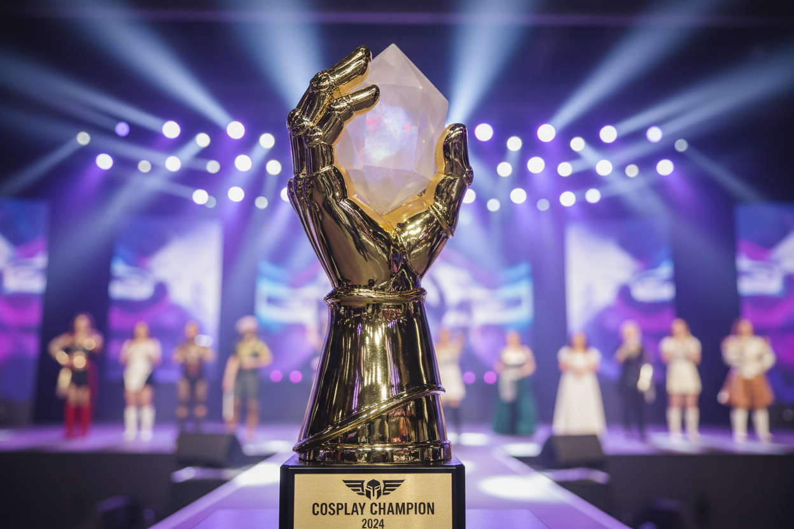

Le gare cosplay sono il cuore pulsante delle fiere italiane. Scopri come preparare un'esibizione vincente e convincere la giuria.
La Preparazione del Costume
Nelle competizioni di alto livello, la giuria valuta ogni singolo dettaglio. La pulizia delle cuciture, la precisione del trucco e la fedeltà al personaggio sono fondamentali.

Non sottovalutare l'importanza di presentare un "reference book" che mostri il processo di creazione del tuo costume.
L'Esibizione sul Palco
Un grande costume senza una buona interpretazione raramente vince. Il palco è il momento in cui il personaggio prende vita.
Il momento della premiazione è il coronamento di mesi di duro lavoro e dedizione.